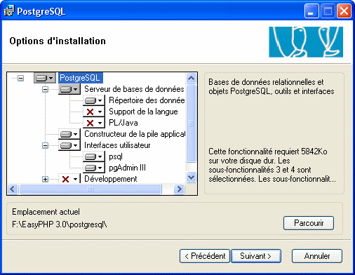

Beaucoup de gens connaissent EasyPHP et WampServer, et comme la plupart des environnements de développement et serveurs, c'est MySQL qui est installé par défaut, au détriment d'autres SGBD.
Or parfois, d'autres SGBD peuvent être plus adéquats pour des raisons multiples telles que la simplicité, la performance ou simplement parce que vous êtes contraints de travailler avec un SGBD autre que MySQL.
Je vais lors de ce tutoriel vous montrer comment installer proprement PostgreSQL et phpPgAdmin (l'équivalent de phpMyAdmin pour MySQL) par-dessus EasyPHP et WampServer, le tout sans conflit avec MySQL ; vous pourrez donc développer certains projets avec PostgreSQL, et d'autres avec MySQL sur le même ordinateur.
Tout d'abord, il faut télécharger PostgreSQL, la dernière version de préférence (à l'heure où j'écris ces lignes, la version 8.3.7). Pour ce faire, il suffit d'aller sur la page de téléchargement du site officiel, de cliquer sur la version voulue puis, sur la page suivante choisir « win32 », de choisir la version .zip et d'attendre quelques secondes sur la dernière page que le téléchargement se lance ; s'il ne se lance pas automatiquement, choisissez un lien miroir parmi ceux qui vous sont proposés.
Installation proprement dite
Une fois le téléchargement terminé, on se retrouve avec une archive nommée postgresql-8.3.7-1.zip (les numéros pouvant changer selon la version).
Une fois cette archive extraite, nous pouvons voir plusieurs fichiers d'installation et de mise à jour.
Le seul fichier qui nous sera utile pour ce tutoriel est le fichier postgresql-8.3.msi, on le lance donc, et une belle fenêtre apparaît.
Choisissez votre langue si ce n'est pas déjà fait puis cliquez sur « Start > ».
La fenêtre suivante est un simple avertissement vous demandant de fermer tous vos programmes en cours, cliquez simplement sur « Suivant > ».
La troisième fenêtre contient les notes d'installation à lire avant l'installation. Cliquez encore sur « Suivant > ».
La fenêtre suivante est plus importante, elle permet de configurer les options.

Si vous ne savez pas où vous mettez les pieds, laissez par défaut, sinon, selon vos besoins, activez ou désactivez les options que vous voulez installer ou non. Afin que PostgreSQL soit installé dans les fichiers d'EasyPHP/WampServer (ce qui n'est pas une obligation), sélectionnez « PostgreSQL », cliquez sur « Parcourir », et allez chercher le dossier d'installation d'EasyPHP/WampServer et rajoutez au chemin « postgresql\ », afin d'obtenir un dossier d'installation similaire à celui de l'image. Enfin, cliquez sur « Suivant > ».
La fenêtre qui suit, permet la configuration du service.
Laissez par défaut, saisissez deux fois votre mot de passe puis cliquez de nouveau sur « Suivant > », là une fenêtre s'affiche pour confirmer la création de l'utilisateur « VOTRE-PC\postgres », cliquez sur « Oui ».
L'étape suivante est l'initialisation du groupe de bases de données.
Vous devez saisir ici le nom d'utilisateur et le mot de passe qui seront nécessaires à la connexion à la base de données, que ce soit dans vos scripts ou dans phpPgAdmin, saisissez donc deux fois votre mot de passe, et cliquez sur « Suivant > ».
L'étape suivante est l'activation des langages de procédures, si vous avez laissé la configuration par défaut, seule la case à cocher « PL/pgsql » est disponible et est déjà cochée, laissez-la comme telle, puis cliquez sur « Suivant > ».
L'étape qui suit est la dernière étape avant l'installation des fichiers sur votre ordinateur.
Cette étape vous propose différents « modules de contribution », chacun de ces modules fournit des fonctionnalités, plus ou moins utiles selon l'utilisation que vous ferez de PostgreSQL. Vous trouverez une description précise de chacun de ces modules dans le manuel PostgreSQL spécifique à la version. Cochez les cases des modules qui vous intéressent, puis cliquez sur « Suivant > ».
L'étape suivante vous informe que PostgreSQL est prêt à être installé. Cliquez simplement sur « Suivant > » pour lancer l'étape finale de l'installation.
Une fois l'installation terminée, un message de confirmation apparaît, vous proposant d'exécuter « Stack Builder ».
Stack Builder vous permet d'installer des pilotes supplémentaires, des modules et d'autres logiciels, laissez la case cochée si vous voulez voir ce qu'il peut vous proposer, sinon décochez-la et cliquez enfin sur « Terminer ».
PostgreSQL est désormais installé ; afin de vérifier le bon déroulement de la configuration, lancez pgAdmin à partir de votre menu démarrer : PostgreSQL 8.3 > pgAdmin III. Une fois lancé, faites clic droit > « se connecter » à votre serveur qui apparaît sur la gauche de la fenêtre.
Une fenêtre apparaît, vous demandant votre mot de passe, il s'agit du second mot de passe que vous avez saisi lors de la configuration.
Enfin, si la connexion réussit, la croix devant votre serveur devrait disparaître.
Le téléchargement se fait sur le site officiel de phpPgAdmin, il vous suffit de cliquer sur l'un des trois liens proposés et d'attendre quelques secondes sur la page suivante.
Installation et configuration
Une fois le téléchargement fini, on obtient une archive qui, une fois extraite, nous révèle un dossier du même nom que l'archive :
Renommez dès à présent ce dossier en « phppgadmin », pour plus de facilité lors de la configuration future d'EasyPHP/WampServer, puis déplacez-le à la racine du dossier d'installation d'EasyPHP ou dans le dossier « apps/ » de WampServer. Sous EasyPHP:
Sous WampServer:
Maintenant qu'il est au bon endroit, nous allons le configurer pour qu'il puisse se connecter à PostgreSQL. Pour ce faire, ouvrez le fichier « phppgadmin\conf\config.inc.php » avec l'éditeur de texte de votre choix puis exécutez les actions suivantes :
Cette dernière modification (facultative) permet l'emploi d'utilisateurs interdits par défaut : pgsql, postgres, root, administrator ainsi que les connexions sans mot de passe.
Chercher
$conf['extra_login_security'] = true;
Remplacer par
$conf['extra_login_security'] = false;
Une fois ces modifications faites, vous pouvez enregistrer puis fermer ce fichier. Nous allons maintenant configurer Apache pour faire pointer votre « 127.0.0.1/home/pgsql/ » sur votre dossier « phppgadmin ». Sous EasyPHP, ouvrez le fichier « DOSSIER_EASYPHP\conf_files\httpd.conf » et exécutez les opérations suivantes :
Chercher
Alias /home/mysql "${path}/phpmyadmin"
Ajouter après
Alias /home/pgsql "${path}/phppgadmin"
Chercher
<Directory "${path}/phpmyadmin">
Options FollowSymLinks Indexes
AllowOverride None
Order deny,allow
allow from 127.0.0.1
deny from all
</Directory>
Ajouter après
<Directory "${path}/phppgadmin">
Options FollowSymLinks Indexes
AllowOverride None
Order deny,allow
allow from 127.0.0.1
deny from all
</Directory>
Sous WampServer, allez dans le dossier DOSSIER_WAMPSERVER\Alias\ et créez le fichier « pgsql.conf » contenant ce qui suit :
Alias /pgsql "DOSSIER_WAMPSERVER/apps/phppgadmin/"
<Directory "DOSSIER_WAMPSERVER/apps/phppgadmin/">
Options Indexes FollowSymLinks MultiViews
AllowOverride all
Order Deny,Allow
Deny from all
Allow from 127.0.0.1
</Directory>
Vous pouvez enregistrer et fermer ce fichier.
Enfin, la dernière action pour que le tout fonctionne est d'activer l'extension « php » nommée « php_pgsql ». Pour ce faire, sous EasyPHP, ouvrez le fichier « DOSSIER_EASYPHP\conf_files\php.ini » et exécutez les opérations suivantes :
Chercher
;extension=php_pgsql.dll
Remplacer par
extension=php_pgsql.dll
Sous WampServer, cochez simplement la case « php_pgsql » à partir de l'icône située dans la barre des tâche, puis cliquez sur « PHP>PHP Extensions » :
phpPgAdmin est désormais installé et configuré. Afin de vérifier le bon fonctionnement de ce dernier, essayez d'accéder à l'aide de votre navigateur internet à l'adresse « http://127.0.0.1/home/pgsql/ » pour EasyPHP et « http://127.0.0.1/pgsql/ » pour WampServer. Si tout va bien, vous devriez voir la page d'accueil de votre administration phpPgAdmin :
Vous pouvez aussi essayer de vous connecter en cliquant sur votre serveur à gauche, et en saisissant vos identifiants PostgreSQL.
Cette étape est facultative, vous devriez avoir à l'heure actuelle une installation PostgreSQL + phpPgAdmin fonctionnelle ; ce chapitre consiste à intégrer des liens d'accès dans la page d'administration d'EasyPHP vers phpPgAdmin. Voici à quoi ressemblera votre installation à la fin de cette étape :
Préparation des fichiers
Tout d'abord, récupérez ces deux images :
Enregistrez-les dans « DOSSIER_EASYPHP\home\images_easyphp\ ».
Ensuite, trouvez les fichiers des licences de PostgreSQL et de phpPgAdmin qui devraient être respectivement dans « DOSSIER_EASYPHP\postgresql\ » et « DOSSIER_EASYPHP\phppgadmin\ ». Copiez ces deux licences dans « DOSSIER_EASYPHP\home\ », puis renommez-les respectivement en « licence_postgresql.php » et « licence_phppgadmin.php ». Il est probable que lorsque vous les renommerez, un message de confirmation apparaisse, vous demandant si vous êtes sûr de vouloir modifier l'extension des fichiers. Dans ce cas, confirmez en cliquant sur « Oui ».
Ouvrez la licence de PostgreSQL « DOSSIER_EASYPHP\home\licence_postgresql.php » dans votre éditeur de texte, et effectuez les opérations suivantes :
Les modifications que nous venons de faire sur les fichiers de licence permettent de mettre en page ces licences. En effet, si avez ouvert la licence avant de faire ces modifications, vous n'auriez vu qu'un fichier texte, les quelques lignes que nous avons rajouter permet d'ajouter le logo d'EasyPhp et quelques liens supplémentaires à ce fichier texte.
Création des liens
Vos licences et images sont désormais exploitables, on va maintenant créer les liens dans la page d'administration d'EasyPHP.
Ouvrez le fichier « DOSSIER_EASYPHP\home\i18n\fr.php » ; il contient le nom des différents logiciels installés avec EasyPHP, nous allons donc lui rajouter celui de PostgreSQL. Exécutez les opérations suivantes.
Chercher
$sqlite_manager = "sqlite_administration";
Ajouter après
$pgsql_manager = "postgresql_administration";
Enregistrez et fermez ce fichier.
Ouvrez le fichier « DOSSIER_EASYPHP\home\versions.inc.php », qui contient les versions des différents logiciels installé avec EasyPHP, nous allons lui rajouter celles de phpPgAdmin et postgreSQL.
Comme pour EasyPHP, cette étape est facultative, d'autant plus que vous devriez déjà voir apparaître un lien vers pgsql en bas à gauche de la page d'accueil de WampServer ; néanmoins, je suis du genre à avoir le souci du détail. Ainsi ce chapitre aura pour but de rajouter le lien pgsql dans les outils et d'afficher le numéro de la version de PostgreSQL.
Ouvrez le fichier DOSSIER_WAMPSERVER\wampmanager.conf.
Chercher
mysqlServiceRemoveParams = --remove wampmysqld
Ajouter après
[postgresql]
postgresqlVersion = "8.3.7"
Pensez à modifier le numéro de la version si nécessaire. Ouvrez le fichier DOSSIER_WAMPSERVER\www\index.php :
Lors de l'installation de phpPgAdmin, si la version de PHP installée est la 5.3.0 ou supérieure, vous allez rencontrer un problème dû à l'ancienneté de phpPgAdmin, qui utilise des fonctions peu employées voire supprimées des versions suivantes de PHP. Le message d'erreur est le suivant :
Citation : phpPgAdmin
Deprecated: Assigning the return value of new by reference is deprecated in C:\Program Files (x86)\wamp\apps\phppgadmin\classes\Misc.php on line 342.
Pour pallier ce problème, il suffit de mettre la variable PHP display_errors à off. Pour ce faire, ouvrez le fichier DOSSIER_PHPPGADMIN\conf\config.inc.php et exécutez les actions suivantes.
Chercher
<?php
Ajouter après
ini_set("display_errors", "off");
En espérant qu'un volontaire sorte une version de phpPgAdmin compatible avec les prochaines versions de PHP ! ;)
Une fois que tout est correctement installé et paramétré, vous pouvez double-cliquer sur l'icône WampServer sur le bureau de Windows pour enfin travailler avec PostgreSQL.
Si tout va bien… :ange: Inutile de lire la suite de ce paragraphe, vous pouvez utiliser PostgreSQL à travers Wamp (ou allez à la pêche :lol: ).
Mais il peut vous arriver d'avoir le message d'erreur suivant :
Et vous ne pouvez pas utiliser les fonctions PostgreSQL. :colere2:
Pas de panique ! Voyons pourquoi ce problème existe et comment le résoudre. PHP dans Wamp ne retrouve pas intuitivement le chemin des extensions dans l'arborescence du disque dur. Il faut expliciter le chemin de PHP dans la variable d'environnement [PATH] de Windows. Voici comment s’y prendre : Ouvrez le « panneau de configuration » et sélectionnez « Système ». La fenêtre « propriétés systèmes » s'ouvre alors Choisir l'onglet « Avancé » et cliquer sur le bouton « Variables d'environnement » (en bas de cette fenêtre).
Une nouvelle fenêtre s'ouvre (encore une !)
Dans la liste intitulée « Variables système », sélectionner « Path » Cliquer ensuite sur le bouton « Modifier ».
Et encore une nouvelle fenêtre (C'est la troisième... et la dernière !).
Vous avez alors accès à la liste des variables déjà en fonction.
Ajouter, à la fin :
C:\wamp\bin\php\php5.3.X;
Valider par le bouton « O.K. »… trois fois de suite, pour enregistrer et quitter toutes les fenêtres successives qui ont été ouvertes. Fermer le panneau de configuration.
Maintenant, vous n'aurez plus ce message et le module php_pgsql.dll sera reconnu, vous pouvez enfin utiliser PostgreSQL avec Wamp.
Si après une erreur de configuration ou pour toute autre raison, vous devez réinstaller PostgreSQL, il y a une démarche un peu spéciale à suivre. Première étape : désinstallez PostgreSQL à partir du panneau de configuration comme tout autre programme.
Deuxième étape : supprimez le dossier PostgreSQL de l'endroit où il était installé (par exemple « DOSSIER_EASYPHP\postgresql »).
Troisième étape : supprimez le dossier utilisateur créé par PostgreSQL dans « C:\Documents and Settings\ ».
Dernière étape : supprimez l'utilisateur créé par PostgreSQL en lançant l'invite de commandes (Menu démarrer > Exécuter > Entrez « cmd », puis validez en appuyant sur la touche « Entrée ». Dans la fenêtre qui s'ouvre, saisissez (pensez à remplacer « UTILISATEUR » par le nom de l'utilisateur PostgreSQL, par exemple postgres) :
net user UTILISATEUR /delete
Merci à Allet de m'avoir fait remarquer une erreur. Pour toute erreur ou question, merci de me contacter via un M.P.